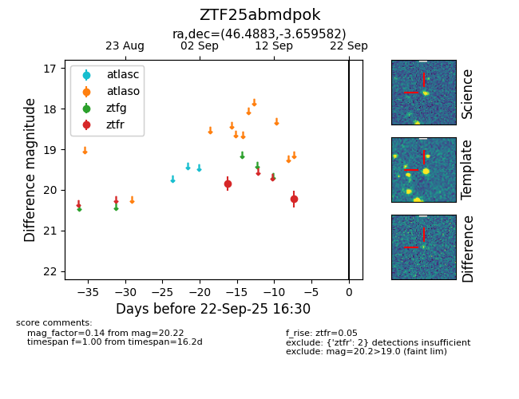

FINK: ZTF25abmdpok
Lasair: ZTF25abmdpok
ALeRCE: ZTF25abmdpok
ZTF25abmdpok (ztf,fink)
equatorial (ra, dec) = (46.4883,-3.65958)
galactic (l, b) = (182.6992,-50.23154)

last ztfr=20.22
2 ztfr detections